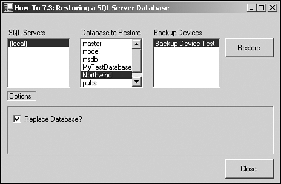

Sometimes the user needs to restore a database, and again, it is nice if he doesn't have to go to Enterprise Manager to accomplish this task. This How-To explains how to use the Restore object from SQL-DMO to accomplish this task.
It's all well and good to be able to back up and verify a SQL Server database, but what about being able to restore the database if necessary? How do you create a dialog box to restore a SQL Server database?
For this How-To, you will use the Restore object of the SQL-DMO object model. You can see the properties and methods that will be used in Table 7.5.
|
Property/Method |
Description |
|---|---|
|
Action |
This property allows you to specify what type of backup you want to take place. The choices are found in the SQLDMO.SQLDMO_RESTORE_TYPE namespace and are SQLDMORestore_Database, SQLDMORestore_Files, SQLDMORestore_Log. |
|
Database |
This property allows you to specify the database name to restore to. |
|
Devices |
This property shows which device(s) you are restoring from. |
|
ReplaceDatabase |
This property tells whether to replace the database. |
|
SQLRestore |
This method causes the restore to be executed. |
Using the objects listed in Table 7.5, you will create a form with options for the user to restore his database.
Open and run the VB.NET -Chapter 7 solution. From the main Windows Form, click on the command button with the caption How-To 7.3. You will then see the form displayed in Figure 7.8.

As with How-To 7.2, a user clicks on the SQL Server for which he wants to display the databases. He can then choose the database and backup device. From there, the user can click the Restore button to restore the database.
Create a Windows Form. Then place the controls shown in Figure 7.8, with the following properties set as in Table 7.6.
|
Object |
Property |
Setting |
|---|---|---|
|
Label |
Name |
Label1 |
|
Text |
SQL Servers |
|
|
ListBox |
Name |
lstSQLServers |
|
Label |
Name |
Label2 |
|
Text |
Databases |
|
|
ListBox |
Name |
lstDatabases |
|
Label |
Name |
Label3 |
|
Text |
Backup Devices |
|
|
ListBox |
Name |
lstBackupDevices |
|
Command Button |
Name |
btnBackup |
|
Text |
&Backup |
|
|
Label |
Name |
Label4 |
|
Text |
Options |
|
|
Panel |
Name |
Panel1 |
|
CheckBox |
Name |
chkReplaceDB |
|
Text |
Replace Database? |
|
|
Checked |
True |
|
|
Command Button |
Name |
btnClose |
|
Text |
&Close |
On the form, add the code in Listing 7.14 to the Load event. This will look familiar from the first How-To. For an examination of the LoadSQLServers routine, check out step 4 in How-To 7.1.
Private Sub frmHowTo7_3_Load(ByVal sender As System.Object, _
ByVal e As System.EventArgs) Handles MyBase.Load
'-- Load up the SQL Servers
LoadSQLServers(Me.lstSQLServers)
End Sub
On the lstSQLServers list box, add the code in Listing 7.15 to the SelectedIndexChanged event. This routine calls both GetSQLDatabases, described in step 6 of How-To 7.1, and GetBackupDevices, described in step 4 of How-To 7.2.
Private Sub lstSQLServers_SelectedIndexChanged(ByVal sender As System.Object,
ByVal e As System.EventArgs) _
Handles lstSQLServers.SelectedIndexChanged
GetSQLDatabases(Me.lstSQLServers.SelectedItem, Me.lstDatabases)
GetBackupDevices(Me.lstSQLServers.SelectedItem, Me.lstBackupDevices)
End Sub
On the btnRestore button, add the code in Listing 7.16 to the Click event. After logging into the server, the Restore object is created and its properties are set from the form. The SQLRestore method is invoked and the connection is closed.
Private Sub btnRestore_Click(ByVal sender As System.Object, _
ByVal e As System.EventArgs) Handles btnRestore.Click
'-- Create a connection to the server
Dim osvr As New SQLDMO.SQLServer()
osvr.LoginSecure = True
osvr.Connect(Me.lstSQLServers.SelectedItem)
'-- Create the restore object, set the properties from the form,
' and execute the restore.
Dim oRestore As New SQLDMO.Restore()
With oRestore
.Action = SQLDMO.SQLDMO_RESTORE_TYPE.SQLDMORestore_Database
.Database = Me.lstDatabases.SelectedItem
.Devices = "[" & Me.lstBackupDevices.SelectedItem & "]"
.ReplaceDatabase = Me.chkReplaceDB.Checked
.SQLRestore(osvr)
End With
'-- Disconnect and clean up.
osvr.DisConnect()
osvr = Nothing
oRestore = Nothing
MessageBox.Show("Database Restored", "Task Completed", _
MessageBoxButtons.OK)
End Sub
Add the code in Listing 7.17 to the Click event of btnClose.
Private Sub btnClose_Click(ByVal sender As System.Object, _
ByVal e As System.EventArgs) Handles btnClose.Click
Me.Close()
End Sub
The Restore object is the counter object to the Backup object, allowing you to restore databases that have been backed up. As with the Backup object, you can either specify the properties yourself or let the user choose them on the form.
Again, you need to be careful which options you let the user specify and which you specify yourself. This is a utility that you might want to secure; only let an administrator have access to it so that users don't accidentally overwrite a good database with an old one.
As with the backup, you could enhance this utility by allowing the user to specify a file to restore from instead of a backup device.